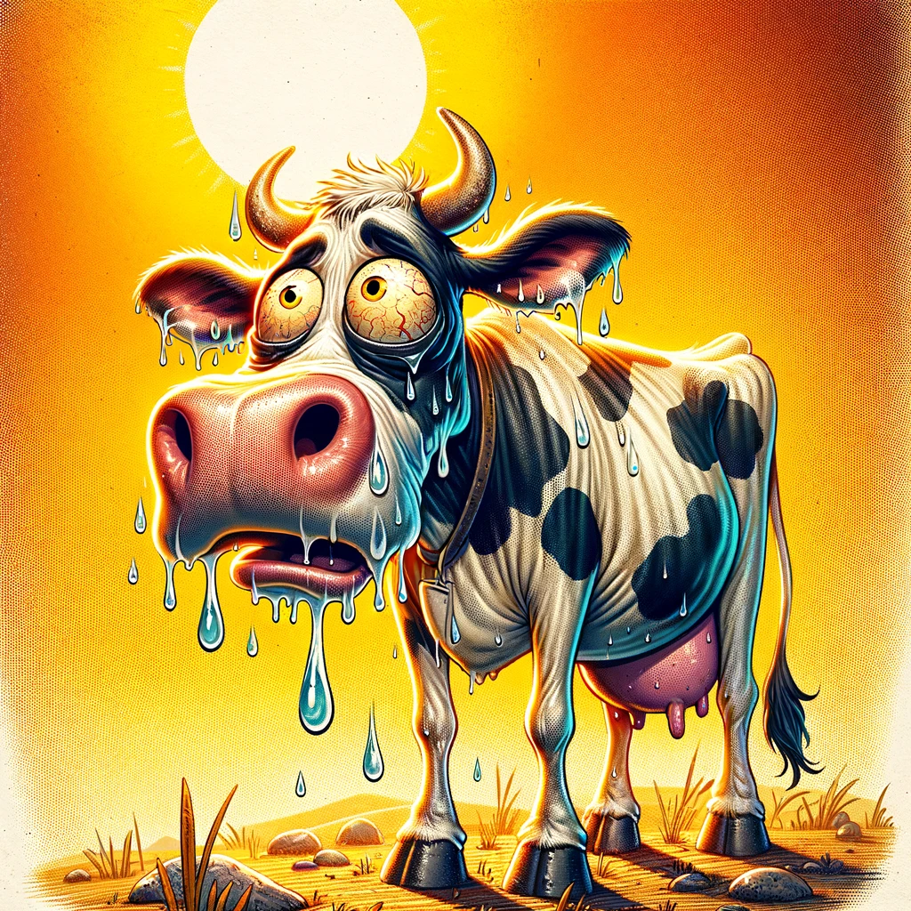

Die durstige Kuh: Wie Produktionsschocks im Schweizer Milchmarkt gefunden werden
Milch
Hitze
Entwicklung eines mathematischen Modells zur Erkennung von extremen Änderungen der Milchproduktion
Zusammenfassung
In diesem hypothetischen Blogbeitrag untersuchen wir einen innovativen Algorithmus, der in der Lage ist, Schocks in der Schweizer Milchproduktion zu identifizieren. Angesichts der zentralen Rolle, die die Milchwirtschaft in der Schweiz spielt, bietet dieser Algorithmus landwirtschaftlichen Betrieben und politischen Entscheidungsträgern ein mächtiges Werkzeug, um auf unvorhergesehene Veränderungen im Milchmarkt reagieren zu können. Durch die Analyse historischer Daten und aktueller Trends kann der Algorithmus frühzeitig Warnsignale erkennen, die auf potenzielle Störungen hinweisen. Dieser Beitrag beleuchtet die Funktionsweise des Algorithmus, seine praktische Anwendung und die möglichen Auswirkungen auf die Schweizer Landwirtschaft. Begleitet wird der Beitrag von einer humorvollen Illustration, die eine Schweizer Milchkuh zeigt, die scheinbar keine Milch mehr produzieren kann – eine spielerische Anspielung auf die ernsten Herausforderungen, die Schocks in der Milchproduktion darstellen können.

Schreiben einer SPARQL-Abfrage
Zuallererst werden die Daten direkt über agrarmarktdaten.ch eingezogen. Die Daten sind als Linked Open Data verfügbar und können dementsprechend über eine SPARQL-Abfrage gezielt verknüpft und heruntergeladen werden.
- Die nötigen R packages werden an den Suchpfad angeheftet.
- Hier wird eine SPARQL Abfrage geschrieben.
Umrechnen der Daten
In einem ersten Schritt müssen die Daten für die Analyse vorbereitet werden. Dazu sehen wir sie uns in ihrer Grundstruktur an.
…
Verschiedene Monate haben verschiedene Anzahl Tage
Erkennung von schockähnlichen Produktionsveränderungen
Schockähnlichen Produktionsveränderungen in der Milchproduktion werden anhand des \(z\)-Wertes der Veränderung der täglichen Milchproduktion im Vergleich zum Vormonat erkannt. Spezifisch werden die Ereignisse nach deren Wahrscheinlichkeit sortiert. Der \(z\)-Wert wird wie folgt gerechnet.
\[z = \frac{\Delta y - \mu}{\sigma} \tag{1}\]
Hierbei ist \(y\) die tägliche Milchproduktion, \(\Delta y\) ist die Veränderung der täglichen Milchproduktion im Vergleich zum Vormonat, \(\mu\) ist das Arithmetische Mittel von \(\Delta y\) und \(\sigma\) die Standardabweichung von \(\Delta y\).

Wann hatten wir schockähnliche Zustände?
Im Rahmen unserer umfassenden Analyse des Milchproduktion präsentieren wir eine detaillierte Tabelle, die die Ergebnisse der Evaluierung von Milchdaten sowie die Identifizierung von Schockzuständen über einen längeren Zeitraum hinweg darstellt. Diese Tabelle ermöglicht es uns, einen tieferen Einblick in die Schwankungen der Milchqualität zu gewinnen, indem sie die Verteilung und Häufigkeit von Schockzuständen in diversen Jahren aufzeigt. Diese Beobachtungen sind essenziell für das Verständnis der zeitlichen Muster und der potenziellen externen Faktoren, die diese Zustände beeinflussen können. Durch die sorgfältige Untersuchung dieser Daten können wir nicht nur die Stabilität und Sicherheit der Milchversorgung gewährleisten, sondern auch gezielte Massnahmen zur Verbesserung der Milchqualität in Zeiten identifizierter Schockzustände entwickeln.
Die detaillierte Analyse und Bewertung der Milchproduktionsdaten, einschliesslich der identifizierten Schockzustände über verschiedene Zeiträume hinweg, ist in der nachstehenden Tabelle dargestellt. Bei dieser umfassenden Untersuchung konnten Schockzustände in unterschiedlichen Jahren festgestellt werden, die signifikante Auswirkungen auf die Qualität und Quantität der Milchproduktion hatten. Ein besonders hervorzuhebender Zeitpunkt ist der Spätsommer des Jahres 2002. In diesem Zeitraum wurde die Schweiz von einer aussergewöhnlich intensiven Hitzewelle heimgesucht. Die ungewöhnlich hohen Temperaturen hatten einen direkten und erheblichen Einfluss auf die Milchwirtschaft des Landes. Die extremen Wetterbedingungen führten zu einer signifikanten Beeinträchtigung der physiologischen Zustände der Milchkühe, was wiederum eine merkliche Reduktion in der Milchproduktion zur Folge hatte. Dieser Zeitraum dient als exemplarisches Beispiel für die Vulnerabilität der Milchwirtschaft gegenüber klimatischen Extremereignissen und unterstreicht die Notwendigkeit adaptiver Strategien zur Sicherstellung der Stabilität und Nachhaltigkeit der Milchproduktion unter sich verändernden Umweltbedingungen.